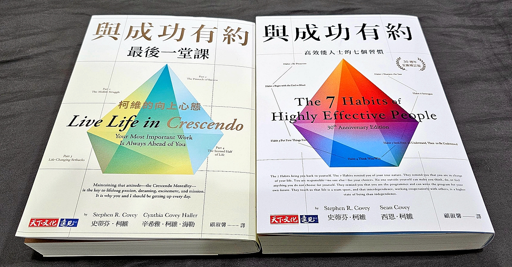
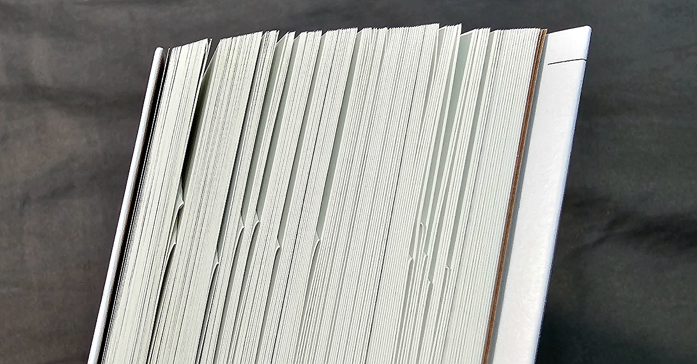

《與成功有約最後一堂課》（左邊這本），是提出「高效能人士的七個習慣」，寫成暢銷大作《與成功有約》（右邊這本）並啟發無數人的史蒂芬柯維，生前與女兒合作的最後一本著作。我自己蠻喜歡的，閱讀過程中，覺得值得日後再次思考，於是摺頁註記的部分不少。

這本書在說什麼？
這本《與成功有約最後一堂課》，以內容來說，是中年危機的實用工具書，希望協助讀者們，能夠活出更精采的中年之後的生活。
這裡首先要提一下「中年危機」。中年危機並沒有一個清楚的定義，不一定發生在中年，一開始也不見得非常戲劇化，只是在無法有效解決，衝突累積甚久一次爆發開時，常對當事人的人生，甚至周邊家人，產生災難性的危機。
中年危機 實際上是「人生意義危機」
人生意義這個問題，並不容易回答，我們從出生以後，因為忙著長大、讀書升學、找工作、升遷、拚事業、有些人建立家庭、生兒育女，這些都有效的填滿了我們的生活和注意力。
當有一天忽然發現自己可能已經在人生的巔峰，往未來幾十年看，成就應該沒辦法再更好，生活中一連串的忙碌，卻只是為了維持現狀穩定。加上開始面臨體力衰退、力不從心，或甚至疾病纏身，這時對人生的挫敗感和虛無感，就會變得嚴重。
也因為之前一直沒有認真回答過「人生的意義到底是什麼」這個問題，在內心徬徨且孤獨虛無的狀況下，就可能啟動許多旁人看來毀滅性的改變。從文學藝術、社會新聞常看到的，就是明知不妥卻深陷其中的外遇（失樂園、麥迪遜之橋）、宗教狂熱拋家棄子、購買炫耀性的昂貴商品而陷入財務困境、藥物濫用、尋求危險與刺激等。
之所以稱作「中年」危機，是因為大部分人的人生，大約在 40 到 60 歲左右，會到達收入與職位的巔峰，身體機能的衰退也明顯有感。不過，如果所從事的行業，巔峰出現得比較早，例如演藝人員或菁英運動員，他們的中年危機就會比一般人來得更早一些，20 到 30 歲就出現也是很有可能。
這本《與成功有約最後一堂課》，就是用有架構的內容，跟我們分享，當你遇到中年危機，人生失去意義感的時候，該怎麼辦？
作者的建議是？
首先，要肯定過去的自己，其實做的不錯，並不是那麼沒有價值的。我們的存在，已經讓很多人的生活變好，以一個中年職業婦女來說，可能帶了一個小團隊，作出相當多的成績，小孩衣食無虞穩定長大，跟伴侶也有許多精采回憶。
如果中年危機襲來，或甚至人生中場遭逢變故的時候，請記得，人生並沒有結束，也沒有人規定你接著只能走下坡，我們可以保持正向的心態，決定讓自己未來的數十年生命，繼續以「漸強」狀態呈現。這個「漸強」是音樂術語 crescendo，也就是在彈奏的時候，讓聲量漸次增強！
即使感覺自己已經到了巔峰，換個心態，我們仍可以去尋找下一個值得我們努力的目標。例如開創新的專案、學習新的才藝、參加新的比賽、積極參與社區服務、協助更多的人，都很好。
中年以後的我們，體力跟敏捷度不如以往，但卻更為認識自己，綜合能力、整體判斷力、確定要做了之後的毅力等，都在最好的狀態。綜合運用自己前半生所獲取的能力。再去創造一些對這個社會有幫助的事情，不只讓世界變好，自己的健康跟心理狀態也會更好。
又是「成功學」，不要吧？
史蒂芬柯維的作品，幾乎都被歸類在成功學書籍中，不過，能夠在競爭超級激烈的成功學領域獨樹一格，並成為家喻戶曉的作品，其內容的確與其他人略有不同。
以他最知名的《與成功有約》來說，講述的內容與原則，和其他成功學作者所說的，或者許多生活得很成功的人在生活中實踐的，都是類似的概念，只是換個方式、換套詞彙說。但柯維的書，把架構處理得不錯，提供實際執行的方法，以及協助思考的範例，讓他更容易被吸收、被記得、被實踐，所以才會是他的書，最能暢銷，也給最多人力量。
這本《與成功有約最後一堂課》，可以視作是其最知名作品《與成功有約》的中年續集。
如果剛進社會，想活出一個成功的人生，可以參考《與成功有約》的七個好習慣，去優化自己的生活，走向自己想去的地方。
十年二十年過去，累積了一些成績，卻忽然對人生感到空虛，並出現各種中年危機症狀時，《與成功有約最後一堂課》就是很好的進階班教材。
柯維的爭議以及我的看法
在網路酸民成為重要特徵的時代，任何事物都可以被放大批評，這種傳統的成功學書籍更像是標靶般的存在。讀完書後我上網繞了一圈，以下，就一些國內外網路常見的批評，以及我的想法，作個整理。
首先，柯維跟他的家人們，經常在書中提到「上帝」，你不用去探聽，也能知道他是非常虔誠的教徒。更精確一點說，柯維本人為摩門教徒。而柯維出名了之後，與人合資的事業體 FranklinCovey，有個基於柯維七習慣打造的教育專案計畫 Leader in Me，導入到美國的許多中小學現場，也是因此，在美國蠻多人認為，Leader in Me 以及柯維的整個論述，都有明確的宗教色彩、違反宗教多元、帶有文化偏見，甚至有點邪教氛圍，論述和計畫都缺乏實證支持，引來不少反彈。
不過，這個問題在臺灣是比較淡化的，畢竟我們很習慣看到翻譯書裡面言必稱上帝，尤其美國是個把 In God We Trust 印在紙鈔上的國家。臺灣讀者閱讀時，都會很自然的代換成自己心中的信仰，可能是民俗信仰、佛祖、祖先，或者一個尚不完全理解的自然秩序力量。如果柯維自己因為宗教而有了對人生好的領悟，他想跟我們分享，我們自然可以擷取領悟的部分，在宗教的部分則搭配自己喜歡的組合。
其次，也有不少人認為，柯維的書就是典型的成功學陳腔濫調，行文內容則是四處拼湊一些令人感動的小故事。但這些激勵人的小故事，不管是歷史事實，或者科學研究細節上，都不是很精確。這樣超譯與拼湊，只看見他們自己想看見的，說服力薄弱。
我的看法比較沒那麼嚴苛，我認為，這類跟人生經營有關的工具書，其最重要的核心，就是他的工具性質。也就是，你能不能根據他書中所說的這些原則，去讓自己變成更好的人？你能不能因此而作出對自己有利的改變？
如果他今天所援引的故事，在歷史細節上更為完整，你會因為這樣更相信他嗎？如果他今天引用的科學研究，更為精確，連各種限制都寫出來，而少了作者本人的延伸，你會因為這樣更被他說服嗎？
並不會。
這個問題拿來批評成功學的書是比較嚴格了些，即使以歷史書寫來說，也有不同的流派。有的重情感、有的重史實，有的希望呈現時代氛圍、有的則嚴守史實材料。我個人的傾向是，面向大眾銷售的書，跟學術界同儕審查，應該是有不同的標準才比較合理。
第三，常被批評的是，柯維在成為有名的成功學導師之後，建立並擴張了他的事業，出版面向少年或兒童的讀物，舉辦各種課程跟合作專案，正向積極的成功學變成他們的商品，持續往周邊擴張。
這個在商業界是很合理且常見的做法，就像是 Apple 在 iPhone 取得成功，他當然會用取得的資金去做 App Store、Apple Music、Apple TV+，再次強化 iPhone 生態系，並延伸到耳機、平板、電腦。
對消費者來說，如果你光是買一套幾百元的書，就能被感動，採取行動改變自己的人生，那很好。但有些人，就是比較缺乏舉一反三並應用到自己身上的能力，如果有老師指導、有教練提供個人化的建議，能夠改變他的人生的話，也是很不錯的。
就以升學為例，有些人自己讀書就能考，有些人需要聽學校老師講一次才會懂，但有些人就是要到補習班再聽不同角度的教法，有些人則需要一對一家教幫忙。
世界進步的過程中，會發展出各種不同的商品與服務，去對應不同的人。你不需要，不代表別人不需要；你不被感動，不代表別人不會被感動。
就像打開 Netflix，如果排行榜所推薦的戲，你看了 5 分鐘並不喜歡，那就離開，去尋找更適合你的主題跟劇情就好，也不用把人家批評得一無是處。這些戲劇之所以會上榜，就表示至少有一部分的人，是喜歡這樣的內容的。
沒辦法感動你的勵志書籍與課程，或許對別人來說，是生命最後的救生圈。
在酸民尖刻言論的背後
書裡提到，有些人中年危機時，對自己的價值感到不確定，於是買了比房子還貴的跑車，漆上誇張的顏色，希望別人看到後，能因此肯定自己。表面是昂貴的拉風跑車，實際上卻是一個沒有自信的靈魂在呼救。
許多酸民，或許本身就是中年危機的受害者。因為在真實人生中挫折，失去人生的意義感，只能躲在鍵盤與螢幕後面，對這世界的一切採取敵意，持續的抱怨並攻擊。當一切都能被他強勢的語言暴力拆解，而淪於虛無的時候。自己內心深層的虛無，似乎也沒那麼孤獨、沒那麼可憐了。
從這個角度看，《與成功有約最後一堂課》非常適合酸民閱讀，希望他們能重新找到人生的意義，從害人害己，變成利人利己。
協助中年危機者的誠懇工具書
反成功學書籍者認為，如果我能像史蒂芬柯維賺那麼多錢又那麼有名的話，我也不會有中年危機，還能夠侃侃而談出書教人。但事實上並不是這樣的。有錢又有名的人，他的中年危機造成的破壞力更大，因為他摔下來的地方，比一般人更高，能損失的金錢和名譽，也比一般人更多。
而且，如果柯維自己真的不曾經歷中年危機，這對他就不是個問題，他又怎麼可能寫出那些實際有用的可行建議呢？
善於閱讀的人，應該都能從書中讀出，柯維跟他的家人，遭遇了程度不等、面向不同的中年危機。進而藉由他們自己的體會，去設定了一些架構跟建議，並且填入許多實際案例與經驗，讓整本書變得容易查閱、容易閱讀，也容易應用。
這本書是柯維在人生的最後階段，跟他的女兒共同完成的計畫。用後設角度來解讀，這正是中年危機柯維的「漸強」(crescendo) 實踐：設定一個自己想完成的主題，並帶領家人一起成長。
《與成功有約最後一堂課》，是跟女兒合著。而《與成功有約》的經典再版，則是由兒子增加新篇章，並確認內容具有時代感。

從更高的視野看，這是柯維將前半生個人魅力的成功，轉換成家族事業，以照顧更多自己在意的家人朋友。
人生的下半場，不應該是走下坡的，就跟籃球賽或棒球賽一樣。籃球的第三節第四節，以及棒球七局後，往往是最精彩，且會被永遠記得的時刻。
柯維也是人，他也有各種喜怒哀樂，也會面臨身體與精神上的退化，如書中最後一章「結語」所述。但他與家人們，依然保持正向態度，持續朝著更好的人生前進，也希望藉由這些言教與身教，協助每個有緣份的讀者，活出精彩一生。
相關連結
《與成功有約+與成功有約最後一堂課（2冊）》
天下文化x博客來專案：3/22-3/31 購買《與成功有約》系列書籍，結帳輸入優惠代碼 @crescendo 本本現折 20 元。
由此連結購買，你沒損失，4% 購書介紹費捐贈公益計畫。